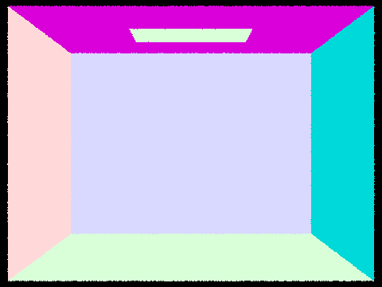
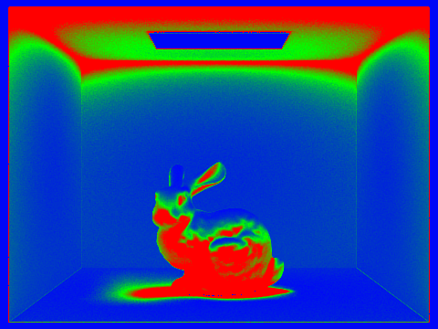

or, alternatively, you can include an SVG image of a LaTex formula.
Overview
In this project, I implemented a renderer that uses raytracing to produce
realistic images of scenes. This renderer uses bounding volume hierarchies
and adaptive sampling to reduce render times. It can render scenes that
contain point or area lights, as well as models that have diffuse materials
(Lambertian surfaces).
Part 1: Ray Generation and Scene Intersection
Walk through the ray generation and primitive intersection parts of the rendering pipeline.
To generate a camera ray in Camera::generate_ray(), I first calculate
the coordinates of the lower left corner of the virtual camera sensor,
as well as the width and height of the sensor rectangle. Then, I can
convert from the given normalized image space coordinates \((x, y)\) to the coordinates
\((xCamera, yCamera)\) in camera-space using scale proportions. I use the
camera’s position and the camera-to-world rotation matrix \(c2w\) to transform
the ray's origin and direction to world-space. After normalizing the ray’s
direction vector, I return a new ray with the world-space origin and direction,
with the minimum and maximum \(t\) values set to \(nClip\) and \(fClip\).
To raytrace a single pixel in the rendering pipeline in PathTracer::raytrace_pixel(),
I generate \(num_samples\) camera rays and use Monte Carlo estimation to
estimate the integral of radiance over the given pixel. To sample from a
uniform distribution over a unit square, I use the PathTracer’s \(gridSampler\);
then, I add the random sample to the bottom left corner of the pixel \((x, y)\) to get
a random point inside the pixel. I generate the camera ray corresponding to
this random point and add its radiance contribution to my Monte Carlo estimator.
After all \(num_samples\) samples, I update the pixel’s value in \(sampleBuffer\).
Explain the triangle intersection algorithm you implemented.
To test for intersection of a ray with a primitive, I substitute
the ray equation \(O + td\) into the implicit formula of the geometric
object (which could be a triangle or a sphere) and solve for the value of \(t\).
For my triangle intersection algorithm, I use the Möller-Trumbore Algorithm
to optimize solving for the intersection point. If the computed value of
\(t\) lies within the ray’s range of \([min\_t, max\_t]\) and
each coordinate-value of the intersection point’s barycentric
coordinates is in the range \([0, 1]\), then the ray intersects the triangle.
In the case of intersection, I update the Intersection data object accordingly.
Here are images with normal shading for a few small .dae files.
|

CBempty.dae
|
 CBgems.dae
CBgems.dae
|
 CBspheres_lambertian.dae
CBspheres_lambertian.dae
|
cow.dae
|
Part 2: Bounding Volume Hierarchy (20 Points)
Walk through your BVH construction algorithm. Explain the heuristic you chose for picking the splitting point.
For my BVH construction algorithm in BVHAccel::construct_bvh(),
I first compute the bounding box of the given list of primitives and
initialize a BVHNode with the bounding box. If the number of objects
in the node is less than or equal to the \(max_leaf_size\), the node is a leaf
and I return it. Otherwise, I recursively build the left and right children.
The heuristic I use for the splitting point is the average of centroids along the
longest axis of the bounding box. I find the longest axis by examining the bounding
box’s extent member. Then, I sort the primitives according to
which side of the splitting point they fall on, by iterating through the
primitives and swapping elements by keeping track of a pointer to
the end of the left child’s elements. If all the elements are sorted into one
child, I decide that the node is a leaf node and terminate early.
Here are images with normal shading for a few large .dae files, rendered with BVH acceleration.
|
beast.dae
|
 maxplanck.dae
maxplanck.dae
|
Compare rendering times on a few scenes with moderately complex geometries with and without BVH acceleration.
Here are some comparisons of rendering times without any acceleration/with BVH acceleration
structures. cow.dae: 22.6782 sec / 0.0772 sec; beast.dae: 282.7774 sec / 0.1645 sec;
maxplanck.dae: 218.5954 sec / 0.1374 sec. For cow.dae, BVH acceleration yields a
speed-up factor of approximately 300, while for more complex scenes like beast.dae and
maxplanck.dae, BVH acceleration is over 1000 times faster. For a complex geometric scene
like CBlucy.dae, BVH acceleration can complete a render in just 0.0732 sec (I did not attempt
to render CBlucy.dae without acceleration).
Part 3: Direct Illumination (20 Points)
Walk through both implementations of the direct lighting function.
For uniform hemisphere lighting, I take \(num_samples\) number of
samples (equal to the number of lights times the number of samples per area light)
over the unit hemisphere. Then, I trace a ray from point \(p\)
in the sampled direction and check if this new ray intersects
another object. I get the emission value of the surface at
the new point of intersection, which is non-zero if the new ray
intersects a light source. Then, using the reflectance value calculated
with BSDF::f() and the estimate of incoming light, I can use the
reflection equation to calculate the amount of outgoing light with a
Monte Carlo estimator. After adding up the contributions from all the
sampled directions, I normalize by dividing by the number of samples and
dividing by the value of the probability density function, which is
\(1 / 2π\) since we sample over the unit hemisphere.
Here are some images rendered with both implementations of the direct lighting function.
|
Uniform Hemisphere Sampling
|
Importance Light Sampling
|
|
|
|
|
|
|
Here is CBbunny.dae rendered with 1, 4, 16, and 64 light rays
and with 1 sample per pixel using importance light sampling.
As the number of samples per area light increases, the soft shadows become less noisy.
At 1 or 4 light rays, the shadows under the bunny look very spotty. At 16 light rays,
the shadows looks less like individual dots.
|
16 Light Rays
|
64 Light Rays
|
Compare the results between uniform hemisphere sampling and lighting sampling.
Uniform hemisphere sampling is somewhat slower than importance light sampling.
For example, to render the Cornel Box bunny with -s 64 -l 32 (64 camera rays per
pixel and 32 samples per area light), uniform hemisphere sampling takes about
98 seconds, while importance sampling takes 84 seconds. However, importance sampling
greatly reduces the noise levels when compared to uniform hemisphere sampling at the
same sample rates.
For example, when rendering the Cornel Box bunny with a very low sampling rate,
-s 1 -l 1, the image created with uniform hemisphere sampling is
so noisy that the shape of the model is barely visible, and the scene is
barely lit. In contrast, the image created with importance sampling is much clearer.
|
Uniform Hemisphere Sampling
|
Importance Light Sampling
|
Part 4: Global Illumination (20 Points)
Walk through your implementation of the indirect lighting function.
For indirect lighting in the function at_least_one_bounce_radiance(),
I first add the direct illumination from one_bounce_radiance() to \(L\_out\).
Then, I sample one direction over the unit hemisphere in object space.
I cast a ray from the given point \(hit\_p\) in the sampled direction.
Before checking for any intersections, I compute the continuation probability,
the \(cpdf\). The \(cpdf = 1\) if this is the first bounce and the maximum ray
depth is greater than 1; we should trace at least one indirect bounce regardless
of Russian roulette. Otherwise, if the current ray depth is greater than 1
but this is not the first bounce, we terminate with probability 0.3, so the \(cpdf = 0.7\).
I call the coin_flip() function with the \(cpdf\), and if it returns true,
I check for an intersection between the new sample ray and another scene object.
If there is an intersection, I recursively call at_least_one_bounce_radiance()
with the new ray and new intersection point, then multiply by the reflectance
and a cosine term, and normalize by both the \(pdf\) and the \(cpdf\).
I add the contributed radiance to \(L\_out\) and return \(L\_out\).
Here are some images rendered with global illumination. I used
1024 samples per pixels, 32 light rays per pixel, and maximum ray depth of 5.
|
CB_spheres_lambertian.dae
|
banana.dae
|
Here is the bunny, rendered with only direct illumination and then
only indirect illumination. I used 1024 samples per pixel.
|
Only direct illumination
|
Only indirect illumination
|
Direct illumination only includes zero-bounce lighting and one-bounce lighting, so
we see the rectangular area light on the ceiling of the Cornell Box and the first bounce of light from the
bunny/walls to the camera. The shadows are completely black and the ceiling is not illuminated.
Only indirect illumination includes two or more bounces of light from the area light to the camera.
The underside of the bunny and the ceiling of the Cornell Box are illuminated. The image is not very bright overall.
For CBbunny.dae, here are rendered views with max_ray_depth set to
0, 1, 2, 3, and 100 (the -m flag). I used 1024 samples per pixel and 32 light rays per pixel.
|
max_ray_depth = 0
|
max_ray_depth = 1
|
|
max_ray_depth = 2
|
max_ray_depth = 3
|
A max ray depth of 0 corresponds to only zero-bounce lighting, so the only thing
we see is the direct light from the area light. A max ray depth of 1 corresponds to
only direct illumination. For any max ray depth greater than 1, I always calculate
at least one additional indirect bounce. As max ray depth increases, the scene
also gets slightly brighter.
Here is CBbunny.dae rendered with various sample-per-pixel rates: 1, 2, 4, 8, 16, 64, and 1024.
I used 4 light rays and max ray depth of 5.
|
1 sample per pixel
|
2 samples per pixel
|
|
4 samples per pixel
|
8 samples per pixel
|
|
16 samples per pixel
|
64 samples per pixel
|
As the number of samples per pixel, the scene becomes less noisy.
At just 1 sample per pixel, the image is very spotty, and the shadows on the bunny
are not uniform. At 1024 samples per pixel, the image is much clearer, and
the bunny's shading is much smoother.
Part 5: Adaptive Sampling (20 Points)
Explain adaptive sampling. Walk through your implementation of the adaptive sampling.
Adaptive sampling is a technique used to reduce rendering times by taking fewer
samples for pixels that converge more quickly, instead of sampling every
single pixel a fixed number of times.
I implemented adaptive sampling by modifying the raytrace_pixel() function.
Each time I sample a pixel, I compute the illuminance from the radiance with
Vector3D::illum() and track running totals for the sum of illuminances
and the sum of squared illuminances. Every samplesPerBatch number of samples,
I calculate the mean and standard deviation of the illuminance samples so far.
Then, I calculate the value of \(I\) and check if it is less than or equal
to the maxTolerance times the mean. If so, then this pixel has converged early.
I stop sampling the pixel and update sampleBuffer with the estimated radiance and
sampleCountBuffer with the total number of samples
(less than the maximum possible number of samples).
Here are CBspheres_lambertian.dae and CBbunny.dae rendered with 2048 samples per pixel,
1 light ray, and max ray depth of 5. In the sampling rate image, red indicates
that the pixel's value did not converge early, while blue indicates that the pixel's
value converged early at a low sampling rate.
|
Rendered image
|
Sample rate image
|
|
Rendered image
|

Sample rate image
|